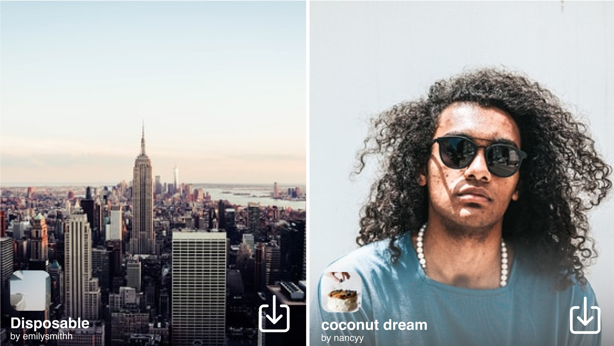
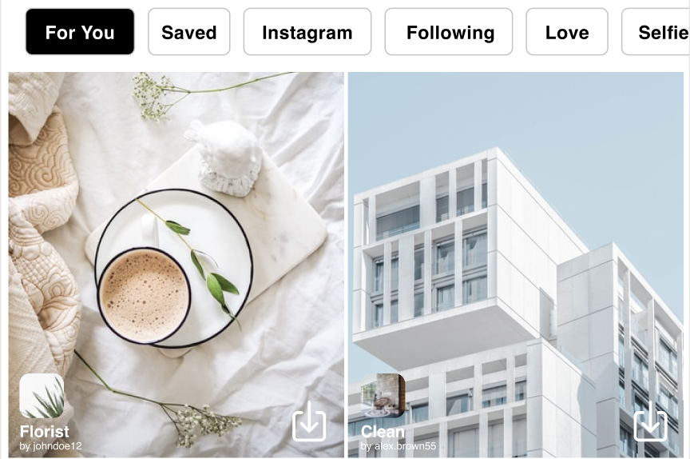
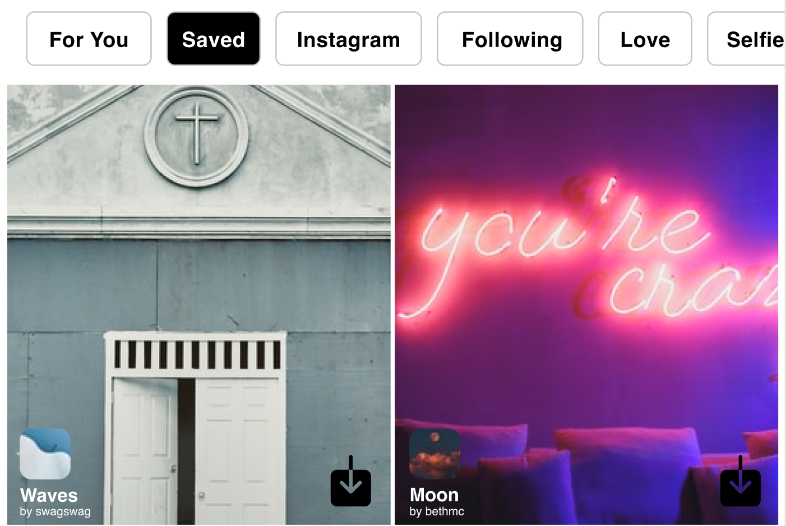

Redesign
Solution for: low discoverability of effects gallery
Where the effect gallery is currently located has low discoverability. It's hard to get to and some users don't even know a library exists.

Design A only displays 4 buttons and "looks like" it takes up more screen space.Design B wouldn't work because it clashes with the "cross" that comes up when users are scrolling through different effects. Also, when an effect has multiple versions, they come up there.
I decided to go with Design C. It relocates the effect gallery next to home and it doesn't make unnecessary changes, so the users won't be confused and solves the problem of easy access and higher discoverability.
Solution for: Poor usability & intuitiveness for browsing effects
📸 Viewing
I went for design B because it displays the thumbnails with a shorter height but still enough for the users to view each effects properly.

📸 Quick Save
To help users navigate through the gallery more efficiently, I added a save button to the bottom right on each thumbnail. Many users only needed to see the thumbnail to decide whether they like the effect or not, instead of needing to try it out first.

📸 Categories

I added a new category called "For You" which contains effects that are recommended to the users based on their previously used effects and trending effects. Based on user needs of wanting to discover more effects, this category will be the default/first one that users see.

In the "Saved" category, users can see the effects they've saved and easily unsave them when they want to get rid of it. Users have always struggled with navigating through saved effects. Sometimes they save an effect but realized they don't use it often and with the current user flow, it's a difficult process to remove them.
Takeaways
1. Keep the users informed
I've seen many cases where users stop using an app or function because they have no idea how to use it or even where to find it! Even the small things like letting the users know what they will get when they click on something. Keeping users in the loop of what's available to them can greatly enhance the user experience of an app and allow them to discover more value in it.
2. Take into account wording problems
As a designer, it's common that we use words according to what we know about the app, but the users may not understand what the words mean. It's important to think about the target user segment, what they know and how they would think about certain wordings